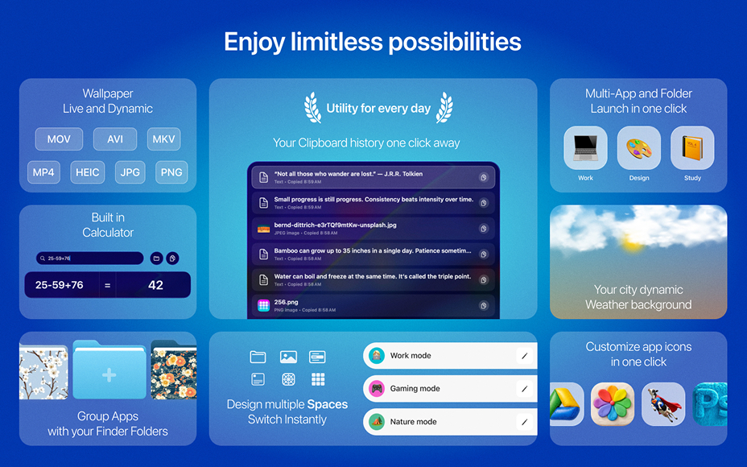
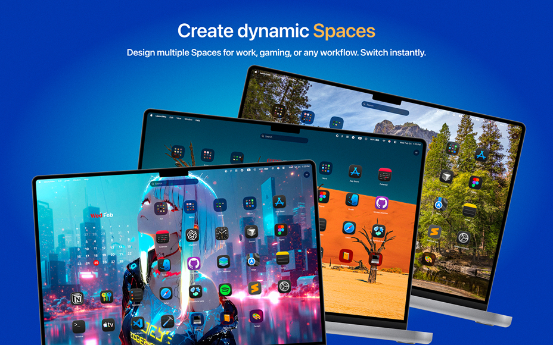
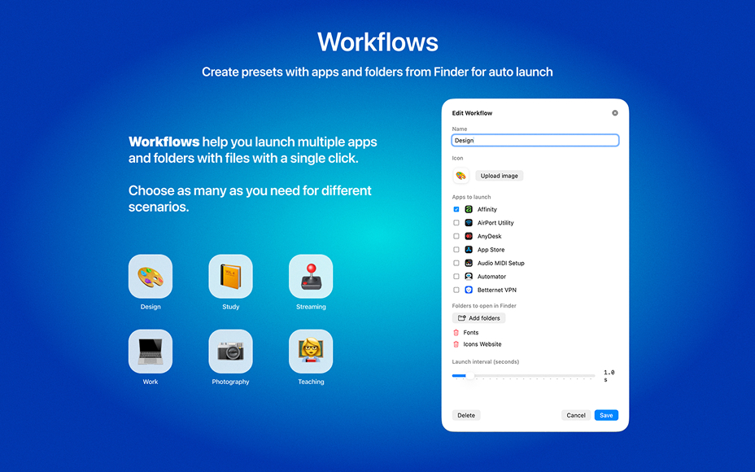
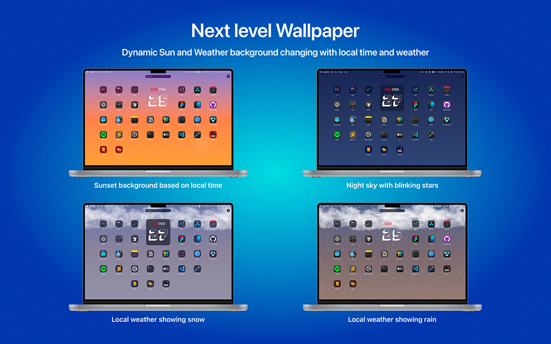
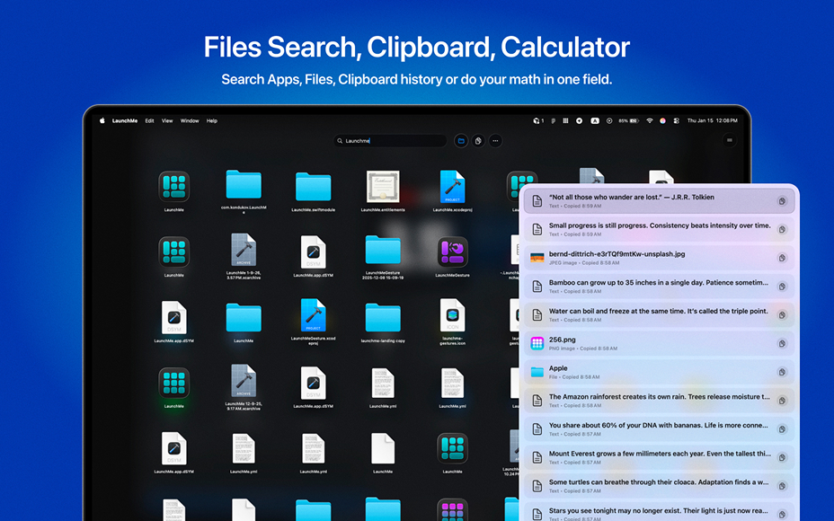
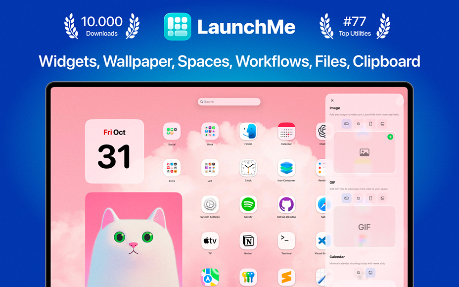

LaunchMe huge update.
New features unpacking
What update 1.111 brings to LaunchMe users
With the latest update LaunchMe became not just an app launcher as Launchpad was but the next generation workspace manager which makes it easier to work with your apps, files and work scenarios.
A modern and best alternative to Launchpad designed for fast app access, file navigation, automation and personalization.
If you are looking for a Mac app launcher, or a replacement for Launchpad in macOS 26 Tahoe, LaunchMe gives you full control over how you launch, organize, and customize your apps and files. Features like Spaces and Workflows gives you powerful automation for any work scenarios.

Spaces - workspace manager from future
Spaces allow you to save your current settings, layout, widgets, folders, and wallpaper into a Space that you can switch to using a hotkey or schedule it to change automatically by day and time.
Create different Spaces for work, gaming, studying, or simply different moods. All your setups are ready in just one click.
Example 1
You are a teacher using one Mac for personal use and work. You can create a Space for work where you can only show apps that you need for your students. After your work time, your personal Space will automatically turn on with all apps you need and your family photo or cat video as live wallpaper.
Example 2
You can create a Space for work with only applications for your work, widgets that motivate you, and no distraction from game icons. But when the time comes to relax, just use one hotkey combination to switch your LaunchMe to Gaming mode Space with wallpaper you love and all your games ready to be launched from the main screen.

Workflows - automation to launch apps and files
Launch multiple apps and folders with files using a single automation preset. If you have recurring scenarios where you need to open a set of apps and Finder folders, you can create one Workflow, name it, choose apps and files, customize its icon with an emoji or image - and it will look and behave just like an app, only more powerful.
Example 1
You are developer using at same moment few browsers, Xcode, GitHub, Folders with projects, Terminal, Figma, Codex and Cursor. Every time you you need to launch all these apps and folders will take some time but with LaunchMe Workflows you can add all these apps and folders to one automation that will looks just like one app on your grid but will launch everything you need automatically with time interval you set manually
Example 2
You have hobbies or learning new skills in free time, for example design, music or video production. All of them need different list of apps and files and Workflows here to help you. Create as many Workflows as you need and name it and decorate with emoji of icon you want and launch everything you need just with one click on Workflow icon in your LaunchMe.
Workflows works just like apps and you can group them to folders with apps or other Workflows.

Dynamic Weather and Sun backgrounds
Dynamic Sun wallpaper
Based on your local time, the sun moves throughout the day, and the background smoothly transitions from sunrise to daytime, sunset, and night sky with moving stars.
Dynamic Weather wallpaper
Choose your city (or any city you want), and the background will automatically adapt to the real weather outside. Supported weather conditions include: Clear, Cloudy, Rain, Thunderstorm, and Snow. Background colors also change with local time, transitioning from sunset to night.
These background animations only activate when you invoke LaunchMe and pause when hidden so as not to use any resources on your Mac.

Files search, Clipboard and Calculator in one search field
When you start typing in the search field, you can switch from Apps search to Files or Clipboard by clicking the icons to the right of the search bar or using the Tab key to switch between modes.
Files search
LaunchMe is a security-first app that does not share any information from your Mac and does not have access to your files until you grant permission to search in specific folders. You can allow search in specific folders or select the entire disk to search everywhere on your Mac.
Clipboard
Access your history of copied files, text, images, and links, and search through the list. Note that you first need to grant permission to read files from Finder for LaunchMe to copy files. Only text can be copied without permission.
Calculator
Type your mathematical equation in the search field and the calculator will automatically show you the result.

All customization features
- Widgets: Calendar, Photo, GIF, Text, Animations, Shaped Photos
- Customize any app icons with PNG (no background) or JPG image
- Clear Colored icons set designed by LaunchMe
- Custom layouts and icon sizes
- Themes: Glass and Flat
- Dynamic wallpapers with Light & Dark mode support (HEIC)
- (Video) Live wallpapers (MP4, MOV, AVI, MKV)
- Change Light / Dark Theme manually or automatically by system
- Customize file's folders with colors, icons, images, and emojis
- Manually change Titles color
- Dynamic Sun wallpaper
- Dynamic Weather wallpaper
- App icons support auto switch to system Dark/Light/Tinted
All core features
- Supports any resolution and multiply screens
- Drag & Drop to create folders or remove from folder
- Create folders by simply choosing apps or files from the list
- File Search for quick access to documents and folders on your Mac
- Clipboard manager saves your copy history with text, files, images, links
- Calculator in search field
- Hot Corners for instant invoke
- Invoke with finger gestures (check Help page)
- Pages with categories for better app organization
- Add any file's folders from your Mac for fast navigation
- Hide apps
- Hide Titles
- Save your layouts
- Set custom keyboard shortcuts
- Add extra sources with app. Choose any folder in Finder or on External Drive and LaunchMe will scan these folders for apps.
- Stage Manager ready mode
- Spaces
- Workflows
Why LaunchMe
LaunchMe is more than a Mac app launcher. LaunchMe delivers intelligent automation, flexible workspace management, and full visual customization, helping you organize apps and files efficiently across multiple screens and workflows. With powerful tools like Spaces and Workflows, giving you full control over how you launch, organize, and switch between apps and work scenarios on modern macOS Tahoe.
Other small updates and fixes
- New Appearance tab in settings
- New Themes settings to control Dark / Light / Auto modes
- New Titles settings allows to change titles color manually to White / Black
- Fixed custom icons reset in Dark/Light themes